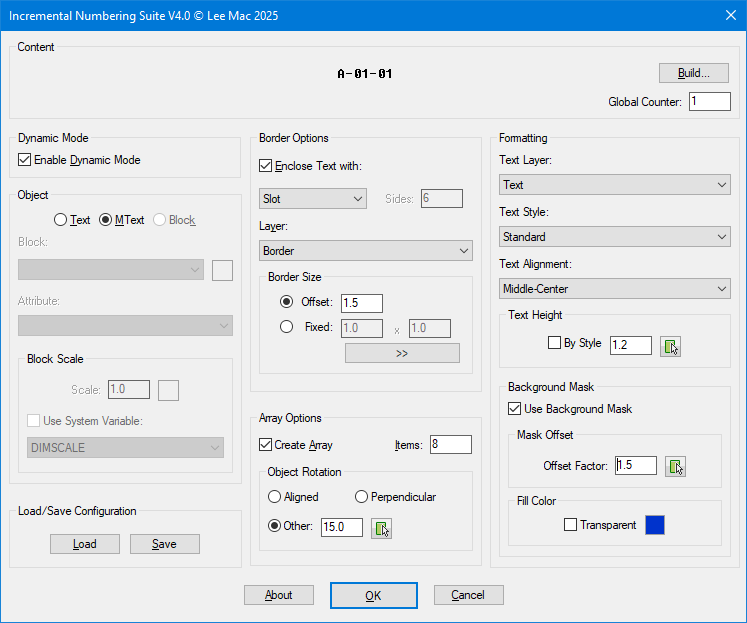
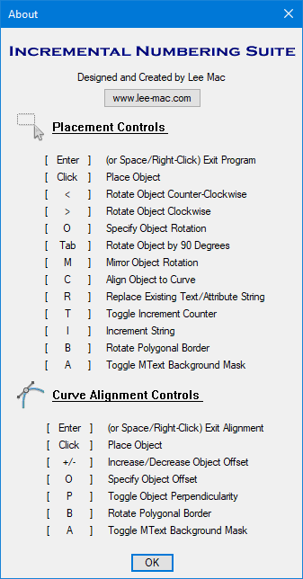
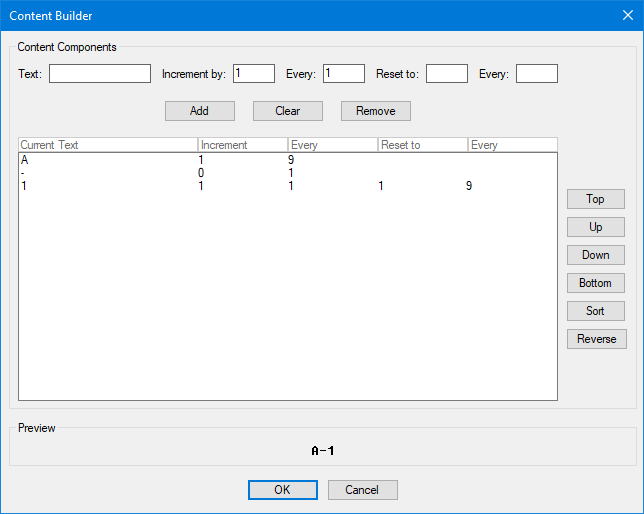
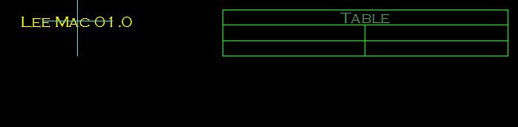
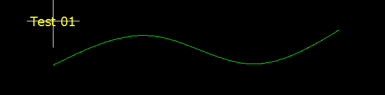

Incremental Numbering Suite
This page is delivered for consistency purposes only, as part of the LeeMac sample module of DynALisp, which shows how DynALisp turns existing AutoLISP programs into a module. The program and its description are the work of Lee Mac, who keeps all the credit for them. The original page, with the latest version, is on Lee Mac's website: https://lee-mac.com/numinc.html
| Function Syntax | LM-IncrementalNumbering – original syntax: NumInc (see aliases) |
| Current Version | 4.2 |
| Compatible with AutoCAD for Mac? | No |
| Compatible with AutoCAD LT? | No |
| Original Page | lee-mac.com/numinc.html |
Contents
Program Description
Incremental Numbering Suite enables the user to dynamically place incrementing alphabetical or numerical text in a drawing, with a range of positioning utilities.
The sequential text can be created using Text, MText or Attributed Blocks; furthermore, the style and formatting of these objects can be altered directly from the main dialog, with all settings remembered between drawing sessions.
The user can modify the Text or Block layer, choose from a list of available Text Styles in the drawing, alter the Text or MText alignment, and also change the Text Height by either entering an arbitrary value, picking a value from the drawing, or using the height defined by the selected Text Style.
If the Object type is set to use an attributed block, the user may choose the block that is to be used from a list of attribute blocks defined in the drawing, or select a block object directly from the drawing.
The user also has control over which attribute will house the incrementing string, and the scale at which the block is inserted. This scale value can take an arbitrary value entered by the user or picked from the drawing, or can be dependent upon the current value of a selected System Variable, such as DIMSCALE.
If MText is selected, the user may also toggle the use of an MText Background Mask and control both the Background Mask Offset Factor and Colour.
The user can build the incrementing content using arbitrarily many numerical, alphabetical, or alphanumerical components, with the increment amount and increment frequency controlled independently for each component. Components may use decimals and leading zeroes, and may also be static (i.e. non-incrementing).
If the user has chosen to use Text or MText objects in which to house the incremental text, there is an additional option to enclose such objects with a border. The border may be Circular, Rectangular, Slot or an n-sided Polygon; created on a layer chosen from the main dialog.
The size of the border may be controlled using an Offset Factor from the Text or MText object. The Offset Factor has behaviour identical to that of the Background Mask Offset Factor wherein the offset is dependent upon the text height: an offset factor of 1.0 exactly fits the Text or MText object, a factor of 1.5 extends the border by 0.5 times the text height etc. Alternatively, the user may specify a fixed border size, with the option to pick either dimension from the drawing.
Main Dialog Preview

About Dialog Preview

Content Builder
The program allows the user to construct the incrementing string from an arbitrary number incrementing or static components.
On clicking the 'Build' button in the top-right of the dialog, the user is presented with the 'Content Builder' dialog, through which an incrementing string can be built from any number of incrementing or static components.
At the top of the dialog, the user may specify the text content of the component, the increment amount, and the frequency of the increment. If the component should be static (i.e. non-incrementing), the user can specify an increment amount of 0 or leave both the increment amount and frequency blank.
The user may also optionally specify a reset value and reset frequency for each component. If such fields are specified, the value of the component will be set to the reset value at every multiple of the reset frequency.
The component text may be alphabetical, numerical, or alphanumerical, and may use decimals and/or leading zeroes. For numerical component text, the increment amount may be positive or negative and may also use decimal values. The increment frequency (and optional reset frequency) should be a positive non-zero integer.
The Global Counter found below the 'Build' button on the main dialog is the underlying counter governing the timing of the increments: when the global counter is a multiple of the increment frequency, the component text will be incremented by the increment amount; when the counter is a multiple of the reset frequency, the component text will be set back to the reset value.
Content Builder Preview

Loading & Saving Configurations
Program configurations may be saved to a .cfg file with arbitrary filename & location using the 'Save' button located in the lower-left of the main dialog; such files may then be subsequently loaded using the corresponding 'Load' button.
Creating an Array
The program also offers the ability for the user to array the selected object, with the content automatically incremented sequentially for each object in the array.
Upon enabling the option to 'Create Array' (located towards the base of the center panel of the dialog), the user can specify the number of items in the array and furthermore control the rotation of each object in the array, either relative to the direction of the array, or by entering a fixed value or picking such value from the drawing.
After submitting the desired dialog settings, the user is then prompted to specify a base point for the array. This is the point at which the first object in the array will be created and the point from which the array will emanate.
Following the valid specification of an array base point, the user is given the option to supply either an array spacing vector, or the array endpoint.
The array spacing vector describes the vector between each successive object in the array. Conversely, the array endpoint specifies the point at which the last object in the array will be inserted; with the remaining objects inserted equispaced between the two points.
Array Example 1
Demonstrating the difference between Spacing Vector and Endpoint specification, with Object Rotation set to 'Aligned'.
Concerning object rotation, the user has three options to determine how objects are oriented relative to the array. If the user decides to align objects in the direction of the array, the rotation of each object will reflect the direction of the array vector.
Similarly, selecting to rotate objects perpendicular to the array will result in objects oriented at right-angles to the array direction, whilst retaining readability.
Finally, the user may also specify an arbitrary fixed rotation, or pick such value directly from the drawing.
Array Example 2
Demonstrating Perpendicular rotation and a fixed zero rotation.
Dynamic Mode
Dynamic Mode is activated by enabling the option: 'Enable Dynamic Mode'. This mode will display a real-time preview of the Text, MText or Attributed Block with any border or background mask that may be specified.
Note:
As a result of the method used to display the real-time preview, Dynamic Mode restricts the use of standard AutoCAD functionality such as Object Snap, Orthomode, Tracking etc. To enable such functionality, uncheck the 'Enable Dynamic Mode' option in the top-left of the dialog.
Various positioning controls displayed at the command line:
| Dynamic Mode Placement Controls | ||
|---|---|---|
| Key | Action | |
| Enter | (or Space/Right-Click) Exit Program [Cancel] | |
| Click | Place Object | |
| < | Rotates Object Counter Clockwise | |
| > | Rotates Object Clockwise | |
| O / o | Specify Object Rotation | |
| Tab | Rotate Object by 90° | |
| M / m | Mirror Object Rotation | |
| C / c | Align Object to Curve | |
| R / r | Replace Existing Annotation Content | |
| T / t | Toggle Increment Counter | |
| I / i | Increment String | |
| B / b | Rotate Polygonal Border | |
| A / a | Toggle MText Background Mask | |
Examples of Usage
Incrementing two sections of Text with a Background Mask and Rectangular Border
Incrementing Text with Leading Zeros
Incrementing Alphabetical Text with a Slot Border
Decimal Increment with Leading Zeros & Automatic Detection of Table Cells

Incrementing Numerical Text with Leading Zeros and Hexagonal Border:
Incrementing Alphabetical Text, Demonstrating Rotation of Triangular Border
Incrementing three sections of Text at Different Rates with a Slot Border
Align Object to Curve
This functionality is very similar to that offered by my Align Text to Curve and Align Objects to Curve programs.

The user can choose to align the object to a selected curve object (Line, LWPolyline, Polyline, XLine, Spline, Arc, Circle, Ellipse etc.) by pressing C or c during placement.
The user is then prompted to select a curve to which the text will be aligned. The text will follow the selected curve with various positioning controls available at the command-line:
| Curve Alignment Controls | ||
|---|---|---|
| Key | Action | |
| Enter | (or Space/Right-Click) Exit Curve Alignment [Cancel] | |
| Click | Place Object | |
| + / - | Increase / Decrease Object Offset | |
| O / o | Specify Object Offset | |
| P / p | Toggle Object Perpendicularity | |
| B / b | Rotate Polygonal Border | |
| A / a | Toggle MText Background Mask | |
Replace Existing Annotation Content
Upon pressing R or r during object placement, the user may select a primary or nested text, mtext, single-line & multiline attribute, dimension, or multileader containing mtext or attributed block content.
Following a valid selection, the text content of the selected annotation object will be updated to display the incrementing string.
If the selected attributed block or multileader attributed block contains more than one attribute, the user will be prompted to specify the tag of the attribute whose value is to be replaced with the sequential text string.
The user can exit this mode and return to standard text placement by pressing Enter, Space, or by Right-clicking the mouse at the prompt.
Standard Placement Mode
This mode is available when the 'Enable Dynamic Mode' control is disabled (unticked).
When using this mode, there is no longer a real-time preview of the text at the cursor, however all standard AutoCAD functionality is available, (such as Object Snap, Tracking, Orthomode, etc.).
The majority of placement controls are still available at the command-line:
| Standard Mode Placement Controls | ||
|---|---|---|
| Key | Action | |
| Enter | (or Space/Right-Click) Exit Program [Cancel] | |
| Click | Place Object | |
| O / o | Specify Object Rotation | |
| RO | Rotate Object by 90° | |
| M / m | Mirror Object Rotation | |
| C / c | Align Object to Curve | |
| R / r | Replace Existing Annotation Content | |
| T / t | Toggle Increment Counter | |
| I / i | Increment String | |
| B / b | Rotate Polygonal Border | |
| A / a | Toggle MText Background Mask | |
Bundled program notes
;;-----------------------------=={ Incremental Numbering Suite }==-----------------------------;;
;; ;;
;; -------------------------------------------- ;;
;; Program Overview ;;
;; -------------------------------------------- ;;
;; ;;
;; Incremental Numbering Suite enables the user to dynamically place incrementing alphabetical ;;
;; or numerical text in a drawing, with a range of positioning utilities and an optional ;;
;; prefix and/or suffix. ;;
;; ;;
;; The sequential text can be created using Text, MText or Attributed Blocks; furthermore, the ;;
;; style and formatting of these objects can be altered directly from the main dialog, with ;;
;; all settings remembered between drawing sessions. ;;
;; ;;
;; The user can modify the Text or Block layer, choose from a list of available Text Styles in ;;
;; the drawing, alter the Text or MText alignment, and also change the Text Height by either ;;
;; entering an arbitrary value, picking a value from the drawing, or using the height defined ;;
;; by the selected Text Style. ;;
;; ;;
;; If the Object type is set to use an attributed block, the user may choose the block that is ;;
;; to be used from a list of attribute blocks defined in the drawing, or select a block object ;;
;; directly from the drawing. ;;
;; ;;
;; The user also has control over which attribute will house the incrementing string, and the ;;
;; scale at which the block is inserted. This scale value can take an arbitrary value entered ;;
;; by the user or picked from the drawing, or can be dependent upon the current value of a ;;
;; selected System Variable, such as DIMSCALE. ;;
;; ;;
;; If MText is selected, the user may also toggle the use of an MText Background Mask and ;;
;; control both the Background Mask Offset Factor and Colour. ;;
;; ;;
;; The user can enter optional Prefix, Middle and Suffix text, and has the option to increment ;;
;; any or all sections, with the ability to increment alphabetical text and use decimals and ;;
;; leading zeros. The user can also specify any numerical increment, positive or negative. ;;
;; ;;
;; If the user has chosen to use Text or MText objects in which to house the incremental text, ;;
;; there is an additional option to enclose such objects with a border. The border may be ;;
;; Circular, Rectangular, Slot or an n-sided Polygon; created on a layer chosen from the main ;;
;; dialog. ;;
;; ;;
;; The size of the border may be controlled using an Offset Factor from the Text or MText ;;
;; object. The Offset Factor has behaviour identical to that of the Background Mask Offset ;;
;; Factor wherein the offset is dependent upon the text height: an offset factor of 1.0 ;;
;; exactly fits the Text or MText object, a factor of 1.5 extends the border by 0.5 times the ;;
;; text height etc. Alternatively, the user may specify a fixed border size, with the option ;;
;; to pick either dimension from the drawing. ;;
;; ;;
;; -------------------------------------------- ;;
;; Creating an Array ;;
;; -------------------------------------------- ;;
;; ;;
;; The program also offers the ability for the user to array the selected object, with the ;;
;; content automatically incremented sequentially for each object in the array. ;;
;; ;;
;; Upon enabling the option to 'Create Array' (located towards the base of the centre panel of ;;
;; the dialog), the user can specify the number of items in the array and furthermore control ;;
;; the rotation of each object in the array, either relative to the direction of the array, ;;
;; or by entering a fixed value or picking such value from the drawing. ;;
;; ;;
;; After submitting the desired dialog settings, the user is then prompted to specify a base ;;
;; point for the array. This is the point at which the first object in the array will be ;;
;; created and the point from which the array will emanate. ;;
;; ;;
;; Following the valid specification of an array base point, the user is given the option to ;;
;; supply either an array spacing vector, or the array endpoint. ;;
;; ;;
;; The array spacing vector describes the vector between each successive object in the array. ;;
;; Conversely, the array endpoint specifies the point at which the last object in the array ;;
;; will be inserted; with the remaining objects inserted equispaced between the two points. ;;
;; ;;
;; Concerning object rotation, the user has three options to determine how objects are ;;
;; oriented relative to the array. If the user decides to align objects in the direction of ;;
;; the array, the rotation of each object will reflect the direction of the array vector. ;;
;; ;;
;; Similarly, selecting to rotate objects perpendicular to the array will result in objects ;;
;; oriented at right-angles to the array direction, whilst retaining readability. ;;
;; ;;
;; Finally, the user may also specify an arbitrary fixed rotation, or pick such a value ;;
;; directly from the drawing. ;;
;; ;;
;; -------------------------------------------- ;;
;; Dynamic Positioning Mode ;;
;; -------------------------------------------- ;;
;; ;;
;; Dynamic Mode is activated by enabling the option: 'Text Follows Cursor'. ;;
;; ;;
;; This mode will display a real-time preview of the Text, MText or Attributed Block with any ;;
;; border or background mask that may be specified. ;;
;; ;;
;; Note: As a result of the method used to display the real-time preview, Dynamic Mode ;;
;; restricts the use of standard AutoCAD functionality such as Object Snap, Orthomode, ;;
;; Tracking etc. To enable such functionality, uncheck the 'Text Follows Cursor' option at ;;
;; the top-left corner of the dialog. ;;
;; ;;
;; Various positioning controls displayed at the command line: ;;
;; ;;
;; -------------------------------------------- ;;
;; Dynamic Mode Positioning Controls: ;;
;; -------------------------------------------- ;;
;; ;;
;; [ Enter ] - (or Space/Right-Click) Exit Program [Cancel] ;;
;; [ Click ] - Place Object ;;
;; [ < ] - Rotate Object Counter Clockwise ;;
;; [ > ] - Rotate Object Clockwise ;;
;; [ O ] - Specify Object Rotation ;;
;; [ Tab ] - Rotate Object by 90� ;;
;; [ M ] - Mirror Object Rotation ;;
;; [ C ] - Align Object to Curve ;;
;; [ R ] - Replace Existing Text/Attribute String ;;
;; [ T ] - Toggle Counter Increment ;;
;; [ I ] - Increment String ;;
;; [ B ] - Rotate Polygonal Border ;;
;; [ A ] - Toggle MText Background Mask ;;
;; ;;
;; -------------------------------------------- ;;
;; Align Object to Curve ;;
;; -------------------------------------------- ;;
;; ;;
;; The user can choose to align the object to a selected curve object (Line, LWPolyline, ;;
;; Polyline, XLine, Spline, Arc, Circle, Ellipse etc.) by pressing 'C' or 'c' during ;;
;; placement. ;;
;; ;;
;; The user is then prompted to select a curve to which the text will be aligned. The text ;;
;; will follow the selected curve with various positioning controls available at the ;;
;; command-line: ;;
;; ;;
;; -------------------------------------------- ;;
;; Curve Alignment Controls ;;
;; -------------------------------------------- ;;
;; ;;
;; [ Enter ] - (or Space/Right-Click) Exit Curve Alignment [Cancel] ;;
;; [ Click ] - Place Object ;;
;; [ +/- ] - Increase/Decrease Object Offset ;;
;; [ O ] - Specify Object Offset ;;
;; [ P ] - Toggle Object Perpendicularity ;;
;; [ B ] - Rotate Polygonal Border ;;
;; [ A ] - Toggle MText Background Mask ;;
;; ;;
;; -------------------------------------------- ;;
;; Replace Existing Text or Attribute String ;;
;; -------------------------------------------- ;;
;; ;;
;; Upon pressing 'R' or 'r' during placement, the user is continuously prompted to select ;;
;; either Text, MText or Attribute, which, upon selection will be modified to contain the ;;
;; sequential text string. ;;
;; ;;
;; The user can exit this mode and return to standard text placement by pressing Enter, ;;
;; Space, or by Right-clicking the mouse at the prompt. ;;
;; ;;
;; -------------------------------------------- ;;
;; Standard Positioning Mode ;;
;; -------------------------------------------- ;;
;; ;;
;; This mode is available when the 'Text Follows Cursor' is disabled (unticked). ;;
;; ;;
;; When using this mode, there is no longer a real-time preview of the text at the cursor, ;;
;; however all standard AutoCAD functionality is available, (such as Object Snap, Tracking, ;;
;; Orthomode, etc.). ;;
;; ;;
;; The majority of placement controls are still available at the command-line: ;;
;; ;;
;; -------------------------------------------- ;;
;; Standard Mode Positioning Controls: ;;
;; -------------------------------------------- ;;
;; ;;
;; [ Enter ] - (or Space/Right-Click) Exit Program [Cancel] ;;
;; [ Click ] - Place Object ;;
;; [ O ] - Specify Object Rotation ;;
;; [ RO ] - Rotate Object by 90� ;;
;; [ M ] - Mirror Object Rotation ;;
;; [ C ] - Align Object to Curve ;;
;; [ R ] - Replace Existing Text/Attribute String ;;
;; [ T ] - Toggle Counter Increment ;;
;; [ I ] - Increment String ;;
;; [ B ] - Rotate Polygonal Border ;;
;; [ A ] - Toggle MText Background Mask ;;
;; ;;
;;-----------------------------------------------------------------------------------------------;;
;; ;;
;; Function Syntax: NumInc ;;
;; ;;
;;-----------------------------------------------------------------------------------------------;;
;; ;;
;; Author: Lee Mac, Copyright © 2009 - www.lee-mac.com ;;
;; ;;
;;-----------------------------------------------------------------------------------------------;;
;; ;;
;; TERMS AND CONDITIONS OF USE ;;
;; ;;
;; This license and disclaimer statement constitutes a legal agreement between you (either as ;;
;; an individual or a single entity) and Lee Mac (the "Author"), for this software product ;;
;; (the "Software"). ;;
;; ;;
;; By downloading, installing, copying, or otherwise using the software, you agree to be bound ;;
;; by all of the following terms and conditions of this license and disclaimer agreement. ;;
;; ;;
;; If you do not agree with all the terms and conditions of this agreement, you must ;;
;; immediately cease use of the Software and destroy all copies of the Software and all of ;;
;; its component or constituent parts in your possession or under your control. ;;
;; ;;
;; The Software is freeware. You may use it royalty free for private use. ;;
;; ;;
;; You may redistribute the Software providing you have written consent from the Author, and ;;
;; that no modifications are made to the original content. ;;
;; ;;
;; You may not charge any fees for the redistribution or use of this Software. ;;
;; ;;
;; The Software is provided "as is", and with all faults. All warranties, expressed or ;;
;; implied, including, but not limited to implied warranties of fitness for a particular use ;;
;; or purpose are hereby disclaimed. There is no guarantee that the operation of this Software ;;
;; will be uninterrupted or error free. ;;
;; ;;
;; You acknowledge and agree that your use of the Software is at your own risk. ;;
;; ;;
;; The Software is a copyrighted work and is protected by copyright law and international ;;
;; copyright treaty. ;;
;; ;;
;;-----------------------------------------------------------------------------------------------;;
;; ;;
;; Version: ;;
;; ;;
;; 1.0: 2009-04-12 - First Release. ;;
;;-----------------------------------------------------------------------------------------------;;
;; 1.1: 2009-04-14 - Added Prefix/Suffix Option. ;;
;;-----------------------------------------------------------------------------------------------;;
;; 1.2: 2009-04-15 - Added Dialog. ;;
;;-----------------------------------------------------------------------------------------------;;
;; 1.3: 2009-04-15 - Added Option to Replace Existing text/attribute string. ;;
;;-----------------------------------------------------------------------------------------------;;
;; 1.4: 2009-04-18 - Made program compatible with leading zeros. ;;
;;-----------------------------------------------------------------------------------------------;;
;; 1.5: 2009-06-16 - Upgraded program code. ;;
;;-----------------------------------------------------------------------------------------------;;
;; 1.6: 2009-06-27 - Added Counter Toggle. ;;
;; - General Bug Fixes. ;;
;;-----------------------------------------------------------------------------------------------;;
;; 1.7: 2010-02-18 - General Program Upgrade. ;;
;;-----------------------------------------------------------------------------------------------;;
;; 1.8: 2010-02-19 - Change Rotation Controls. ;;
;;-----------------------------------------------------------------------------------------------;;
;; 1.9: 2010-02-22 - Added option to not use GrRead loop, and hence allow OSnap to function. ;;
;; - Added ability to place text in Table Cells. ;;
;;-----------------------------------------------------------------------------------------------;;
;; 2.0: 2010-02-24 - Fixed Text Height Bug. ;;
;;-----------------------------------------------------------------------------------------------;;
;; 2.1: 2010-05-05 - Removed imitation OSnap. ;;
;; - Modified loop to allow multiple replacements when in standard mode. ;;
;; - Added ability to use Alphabetical Increment. ;;
;;-----------------------------------------------------------------------------------------------;;
;; 2.2: 2010-05-06 - Fixed bug with text case when incrementing alphabetical strings. ;;
;; - Added ability to border text with either Circle, Rectangle or Slot; ;;
;; and offset from text. ;;
;;-----------------------------------------------------------------------------------------------;;
;; 2.3: 2010-05-07 - Changed the way that layer/style globals are stored to allow for ;;
;; layer/style changes between uses. ;;
;; - Removed Xref layers/styles from list. ;;
;; - Fixed UCS bugs. ;;
;;-----------------------------------------------------------------------------------------------;;
;; 2.4: 2010-05-10 - Added a 'By Style' option for text height selection. ;;
;; - Added option to enclose text with n-sided Polygon. ;;
;; - Added ability to rotate polygonal border. ;;
;;-----------------------------------------------------------------------------------------------;;
;; 2.5: 2010-05-11 - Allowed for Zero height in TextStyle. ;;
;; - Added ability to fix border size. ;;
;; - Fixed Text Height variable bug. ;;
;; - Fixed Rotation of odd-sided polygons. ;;
;;-----------------------------------------------------------------------------------------------;;
;; 2.6: 2010-05-12 - Fixed Rotation of odd-sided polygons when text is not set to follow ;;
;; cursor. ;;
;; - Fixed Slot Bulges. ;;
;; - Added 'B' control to DCL About page. ;;
;;-----------------------------------------------------------------------------------------------;;
;; 2.7: 2010-05-22 - Fixed Border issue when in different view. ;;
;;-----------------------------------------------------------------------------------------------;;
;; 2.8: 2010-05-24 - Changed DCL/CFG file save path to make program ;;
;; compatible with Bricscad. ;;
;;-----------------------------------------------------------------------------------------------;;
;; 2.9: 2010-05-29 - Upgraded code to determine DCL/CFG Filepath, to allow for AutoCAD ;;
;; Versions pre 2004. ;;
;;-----------------------------------------------------------------------------------------------;;
;; 3.0: 2011-10-10 - Program completely rewritten to improve program performance, update ;;
;; code formatting and include the following new features: ;;
;; - Ability to use Text, MText or an Attributed Block to house ;;
;; incrementing string. ;;
;; - Ability to change Text / MText Alignment. ;;
;; - Ability to toggle the use of a Background Mask with MText. ;;
;; - Ability to specify both dimensions for the fixed size Slot / ;;
;; Rectangular border. ;;
;; - Vastly improved alphabetical text incrementing. ;;
;; - Improved handling of negative numbers. ;;
;; - Dialog interface completely redesigned to make it more user-friendly ;;
;; and intuitive to navigate. ;;
;; - Improved non-dynamic mode interface & functionality. ;;
;; - Program works in all UCS/Views correctly. ;;
;;-----------------------------------------------------------------------------------------------;;
;; 3.1: 2011-10-11 - Fixed bug concerning null text size variable when object is set to ;;
;; attributed block. ;;
;;-----------------------------------------------------------------------------------------------;;
;; 3.2: 2012-03-02 - Fixed bug wherein the object type default is a block but there are no ;;
;; blocks in the drawing. ;;
;; - Altered structure of numinc:popup function and introduced new ;;
;; numinc:wsh function to avoid repetitive creation of the Windows ;;
;; Script Host (WSH) Object. ;;
;; - Modified *error* function to release global WSH object and improve ;;
;; error handling. ;;
;; - Fixed bug pertaining to collection of attributed block data. ;;
;;-----------------------------------------------------------------------------------------------;;
;; 3.3: 2012-06-18 - Fixed bug causing program to crash if the Object type is set to 'Text' ;;
;; and Text Alignment is set to 'Left', then the Object type is switched ;;
;; to 'MText'. ;;
;; - Redesigned 'About' dialog to include appropriate bitmap images and ;;
;; stylized program title. ;;
;; - Added the ability to increment multiple sections of the incrementing ;;
;; string. ;;
;; - Fixed bug in which the program would check for incorrect border ;;
;; parameters when the Object type is set to 'Block'. ;;
;; - Added the ability to create an array of incrementing Text, MText or ;;
;; Block objects, with the selected object aligned or perpendicular to ;;
;; the array, or with rotation set to an arbitrary angle. ;;
;; - Included set of controls within the Formatting section of the dialog ;;
;; to give the user the ability to control MText Background Mask offset ;;
;; factor and colour. ;;
;; - Added ability to specify the block scale as an arbitrary value, a ;;
;; value picked from the drawing, or based on the value of a selected ;;
;; System Variable. ;;
;; - Provided the user the option to pick the Text Height value from the ;;
;; drawing. ;;
;; - Redesigned all object selection and pick buttons to conform with ;;
;; standard AutoCAD dialog interfaces. ;;
;; - Added the ability to increment the string during placement by pressing ;;
;; the I/i key. ;;
;; - Text & MText Border Offset is now a factor of text height where an ;;
;; offset factor of 1.0 exactly fits the Text or MText object, a factor ;;
;; of 1.5 extends the border by 0.5 times the text height etc. This ;;
;; emulates the behaviour of the MText Background Mask, to enable the ;;
;; user to easily create a rectangular border around the background mask ;;
;; by specifying the same offset factor for both. This to me seemed ;;
;; more intuitive. ;;
;;-----------------------------------------------------------------------------------------------;;
;; 3.4: 2014-03-16 - Error handler function rewritten to fix a bug causing modified ;;
;; system variables to not be reset. ;;
;; - Error messages rewritten to provide user with additional detailed ;;
;; diagnostic information. ;;
;; - Removed locked layers from layer drop-down menus, as these will cause ;;
;; the program to error. ;;
;; - Altered loading message to correctly display copyright symbol. ;;
;; - The program configuration is now saved if user presses 'Esc' during ;;
;; object placement. ;;
;; - numinc:writeconfig & numinc:tostring functions rewritten. ;;
;; - numinc:gettextbox rewritten and numinc:createtextborder function ;;
;; updated to fix border elevation bug. ;;
;;-----------------------------------------------------------------------------------------------;;
;; 3.5: 2014-04-13 - Minor update to fix a reported intermittent bug causing the program to ;;
;; crash when generating the first object after dimissing the dialog ;;
;; with dynamic mode enabled. ;;
;;-----------------------------------------------------------------------------------------------;;
;; 3.6: 2015-02-09 - Minor update to fix a bug causing the program to crash when selecting ;;
;; the 'Fixed' border option with a 'Slot' or 'Rectangle' border. ;;
;;-----------------------------------------------------------------------------------------------;;
;; 3.7: 2015-03-22 - Minor update to set dialog initial focus and allow the user to dismiss ;;
;; the program dialog by pressing ENTER at any time. ;;
;;-----------------------------------------------------------------------------------------------;;
;; 3.8: 2015-06-13 - Program modified to allow the user to replace the text content of ;;
;; primary & nested text, mtext, single-line & multiline attributes, ;;
;; dimensions, and multileaders containing mtext or attributed block ;;
;; content. ;;
;; - If the target attributed block contains more than one attribute, the ;;
;; user will be prompted to specify the tag of the attribute whose value ;;
;; is to be replaced. ;;
;;-----------------------------------------------------------------------------------------------;;
;; 3.9: 2015-12-06 - Improved method used to determine MText width in order to account for ;;
;; multiple lines of text. ;;
;; - Removed case-sensitivity from attribute tag comparison to account for ;;
;; applications which do not force uppercase attribute tags. ;;
;; - Fixed bug causing single-line text to have an oblique angle applied if ;;
;; the current text style has an oblique angle set, but the selected ;;
;; text style does not. ;;
;;-----------------------------------------------------------------------------------------------;;
Command Names And Aliases
As in every DynALisp module, each program of this sample module has one main command, named LM-*, and the original command names of Lee Mac's page are kept as its aliases: they run the same command, and can be added, renamed or removed in Dyl-Suite (saved in Resources\Aliases.csv).
| Command | Aliases | Name |
|---|---|---|
| LM-IncrementalNumbering | NUMINC | Incremental Numbering |